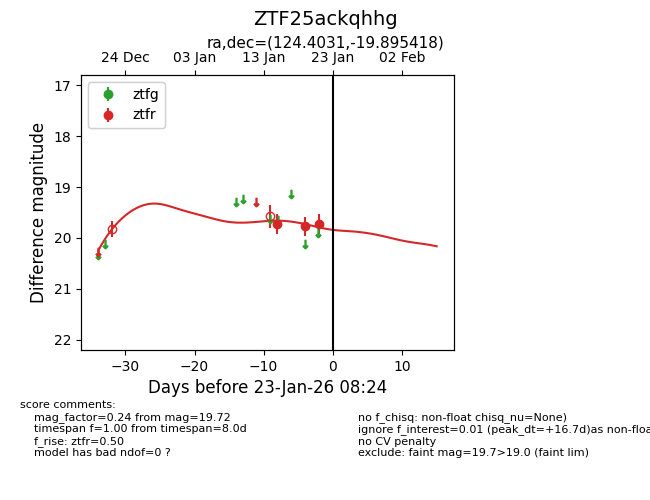
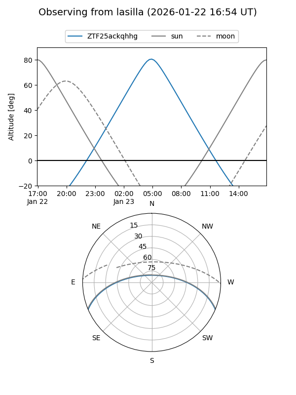
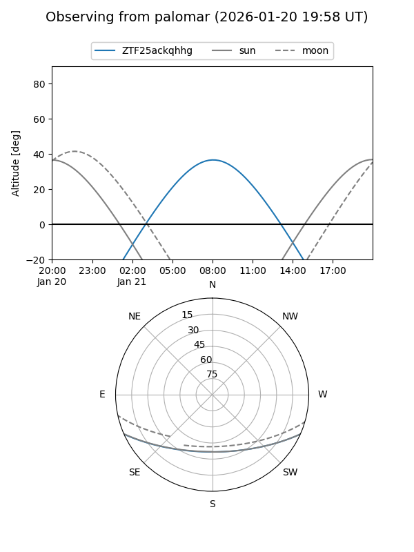
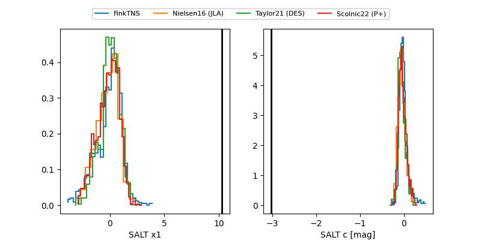

ZTF25ackqhhg
Target ZTF25ackqhhg at 2026-01-19 08:21
Aliases and brokers:
FINK: link
Lasair: link
ALeRCE: link
alt names
ZTF25ackqhhg (ztf,fink_ztf)
Coordinates:
equatorial (ra, dec) = 124.4031,-19.89542
equatorial (HMS+DMS) = 08:17:36.74,-19:53:43.50
galactic (l, b) = (240.6898,+8.75055)
Flags:
Photometry:
last ztfr=19.77
2 ztfr detections
Lightcurve

Visibility


Additional plots
